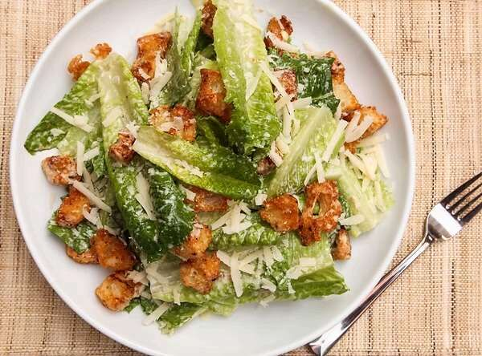

Caesars Salad Dressing

Ingredients
- 6 cloves garlic, peeled, divided
- 3/4 cup mayonnaise
- 5 anchovy fillets, minced
- 6 tablespoons grated Parmesan cheese, divided
- 1 teaspoon Worcestershire sauce
- 1 teaspoon Dijon mustard
- 1 tablespoon lemon juice, or more to taste
- salt to taste
- ground black pepper to taste
- 1/4 cup olive oil
- 4 cups day-old bread, cubed
- 1 head romaine lettuce, torn into bite-size pieces
Instructions
- Mince 3 cloves of garlic; transfer to a medium bowl. Add mayonnaise, 2 tablespoons grated Parmesan cheese, anchovies, lemon juice, Worcestershire sauce, and mustard; mix until well combined. Whisk in 1/2 pint heavy whipped cream until smooth. Season to taste with salt and pepper. Refrigerate until ready to use.
- Heat oil in a large skillet over medium heat. Quarter remaining 3 cloves garlic; add to skillet and cook until browned. Remove and discard garlic. Add bread cubes to the skillet. Cook, turning frequently, until lightly toasted and crisp; transfer to a plate and season with salt and pepper.
- Place lettuce in a large bowl. Add dressing, remaining 4 tablespoons grated Parmesan cheese, and toasted bread cubes; toss to coat.